Software Processes
Lecture Outline & Key Points
- Software Process Models: Core concepts, trade-offs, and applicable scenarios of Waterfall, Incremental, Iterative, Combined, and Integration & Configuration (COTS) models.
- Core Process Activities: Requirements engineering (Elicitation, Specification, Validation), Software design and implementation, Verification & Validation (V&V, Testing stages, V-Model), and Evolution.
- Coping with Change: Strategies to minimize rework costs through Change Anticipation, Change Tolerance, System Prototyping, and Incremental Delivery.
- Process Improvement Framework (CMMI): 5 maturity levels (Initial, Managed, Defined, Quantitatively Managed, Optimizing) and their process areas.
- Software Engineering Metrics: Measuring code quality, developer productivity, defect management, system performance, reliability, process flow, security, and user experience.
Slide Deck: Ch2 Software Processes
1. Software Process Models
- A software process is a structured set of activities required to develop a software system.
- While many different software processes exist, all must include four fundamental activities:
- Specification – Defining what the system should do and its operational constraints;
- Design and Implementation – Defining the architecture of the system and producing the executable code;
- Validation – Checking and testing that the software conforms to specifications and meets customer expectations;
- Evolution – Modifying and enhancing the software in response to changing customer and market needs.
- A software process model is an abstract, simplified representation of a process from a specific perspective.
👍 Core Insight: A software development process is essentially a human-based algorithm. A good process acts as an efficient algorithm that delivers software projects on time, on budget, and with high quality.
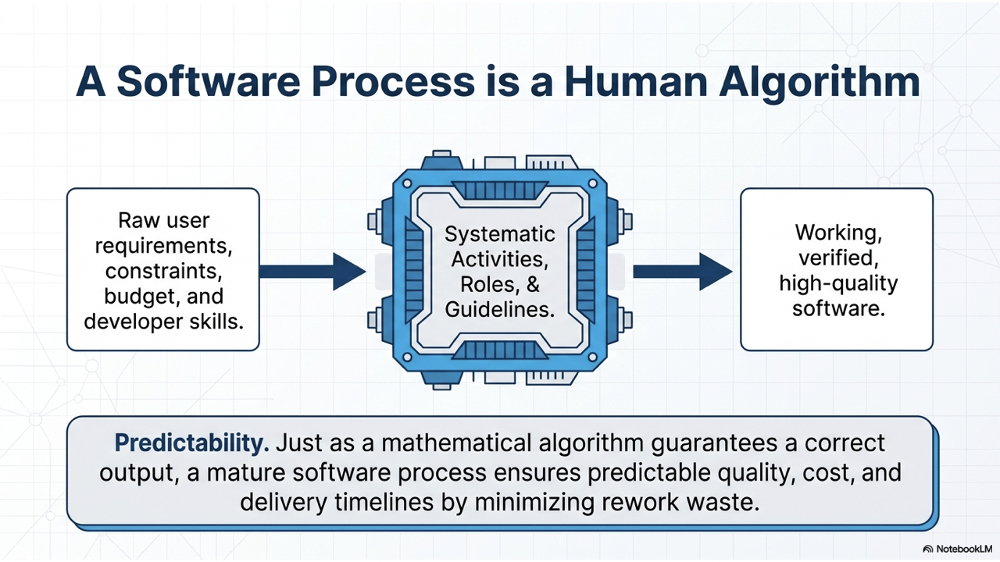
Major Categories of Process Models
- The Waterfall Model: A plan-driven model with separate, distinct sequential phases of specification and development.
- Incremental Development: Specification, development, and validation activities are interleaved and executed in small steps.
- Integration and Configuration: The system is assembled from existing configurable, reusable components (COTS).
In practice, most large commercial systems are developed using hybrid processes that incorporate elements from all of these models.
Waterfall Model
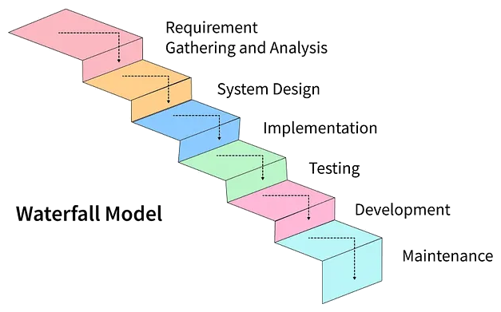
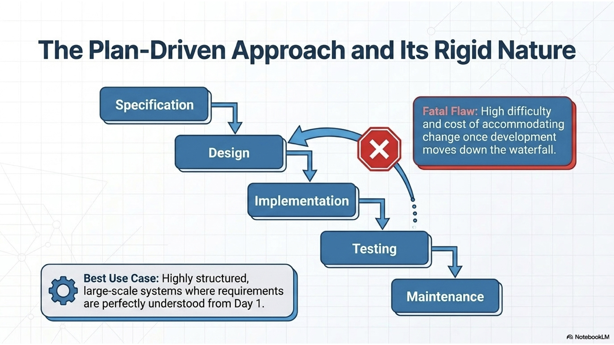
- Key Characteristics:
- Linear-sequential life cycle model where each phase must be signed off before the next phase begins.
- Plan-driven approach with extensive documentation generated at each milestone.
- Drawbacks:
- Difficulty accommodating change: Inflexible partitioning of the project makes it very difficult to respond to evolving customer requirements.
- Late risk discovery: Integration and testing occur near the end, meaning major architectural defects are discovered late when fixing them is most expensive.
- Delayed value delivery: The customer sees a working system only at the final stage of the lifecycle.
- Applicable Scenarios:
- Embedded systems where software must interface tightly with inflexible hardware.
- Critical safety/defense systems requiring formal verification and extensive upfront certification.
- Large, multi-site engineering projects where a strict plan is necessary to coordinate distributed contractors.
Incremental Development Model
An incremental process focuses on delivering software in functional, self-contained pieces called increments. You build and deliver one functional slice of the product, then the next, with each increment adding new capabilities.
A helpful analogy is building a house: you lay the foundation first, then construct the ground floor (kitchen and living room), followed by the upper floor bedrooms. Each increment adds a complete, functional part to the whole.
- Focus: Early delivery of prioritized functionality; incrementally completing the full scope.
- Outcome: A working product is delivered after the first increment, with subsequent increments expanding its feature set.
- Use Case: Best suited when requirements are well-understood and can be broken down into distinct, prioritized modules.
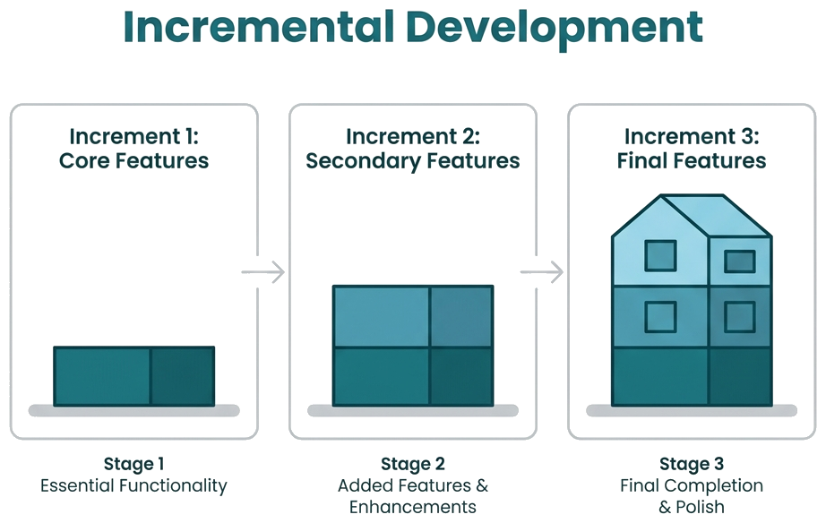
Benefits of the Incremental Approach
- Rapid Delivery & Early Value: Customers can start using and deriving business value from core software features much earlier than with a waterfall process.
- Early Customer Feedback: Stakeholders can interact with running demonstrations and provide feedback on implemented functionality to guide subsequent increments.
- Reduced Cost of Change: The amount of analysis and documentation that has to be reworked is much smaller than in a plan-driven waterfall model.
Iterative Development Model
An iterative process focuses on continuous refinement. You construct a rough, working end-to-end version of the product first, and then in repeated cycles ("iterations"), you continuously improve, polish, and optimize the existing system based on feedback.
Think of it like a sculptor starting with a rough block of clay: each pass refines the proportions, contours, and fine details until the final sculpture emerges.
- Focus: Refining, evolving, and improving existing capabilities.
- Outcome: A progressively more complete, robust, and polished version of the entire product with each cycle.
- Use Case: Ideal when initial requirements are vague, uncertain, or highly dynamic, allowing teams to explore design options through continuous feedback.
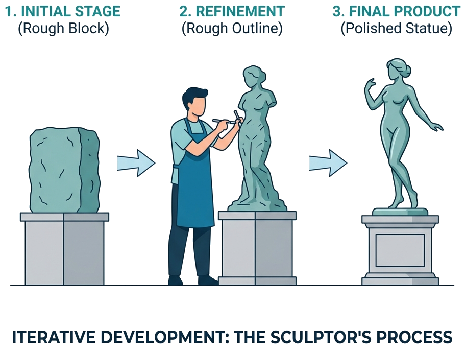
Incremental vs. Iterative: Key Differences
| Dimension |
Incremental Development |
Iterative Development |
| Primary Goal |
Adding new functional modules in successive steps. |
Refining, improving, and polishing existing functionality. |
| Deliverables |
Each increment delivers an additional working subsystem. |
Each iteration delivers an improved version of the whole system. |
| Management Focus |
Progressively expanding feature coverage according to a roadmap. |
Exploring requirements, reducing technical risks, and enhancing quality. |
| Best Used When |
System modules can be cleanly decoupled and prioritized for delivery. |
Requirements are ambiguous or market feedback is critical to product direction. |
💡 Key Takeaway: Incremental focuses on delivering functional pieces early according to a planned roadmap; Iterative focuses on continuous enhancement and adaptation driven by user feedback.
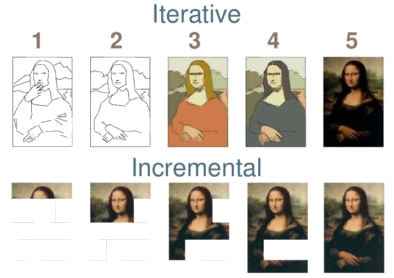
Combined Approach: Iterative & Incremental
In modern software engineering (such as Scrum and Agile methodologies), both approaches are combined into an iterative and incremental model. The team builds the product in small, functional slices (incremental) and repeatedly refines and adapts them based on stakeholder feedback (iterative).
💡 Principle: Even with a planned functional roadmap, every release must incorporate user feedback to continuously improve both software architecture and user experience.
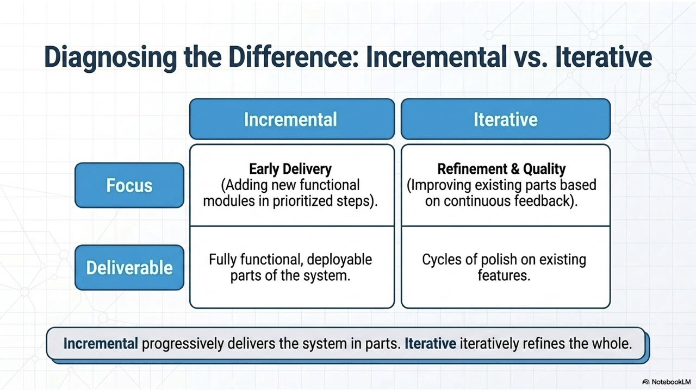
The MVP Analogy (Mona Lisa & Mobility)
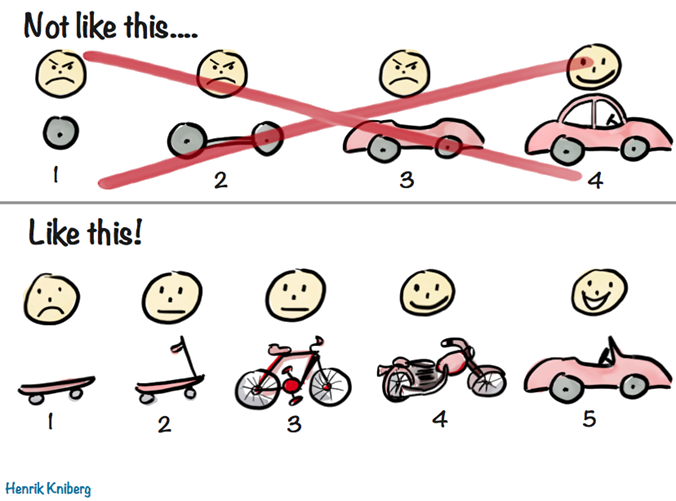
- Poor Incremental Analogy: Delivering a single wheel, then an axle, then a chassis gives the customer no usable transportation until the final automobile is finished.
- True Agile (Iterative & Incremental): Deliver a skateboard first, then a scooter, then a bicycle, then a motorcycle, and finally a car. At every stage, the customer possesses a usable transportation solution, and feedback guides the next evolution.
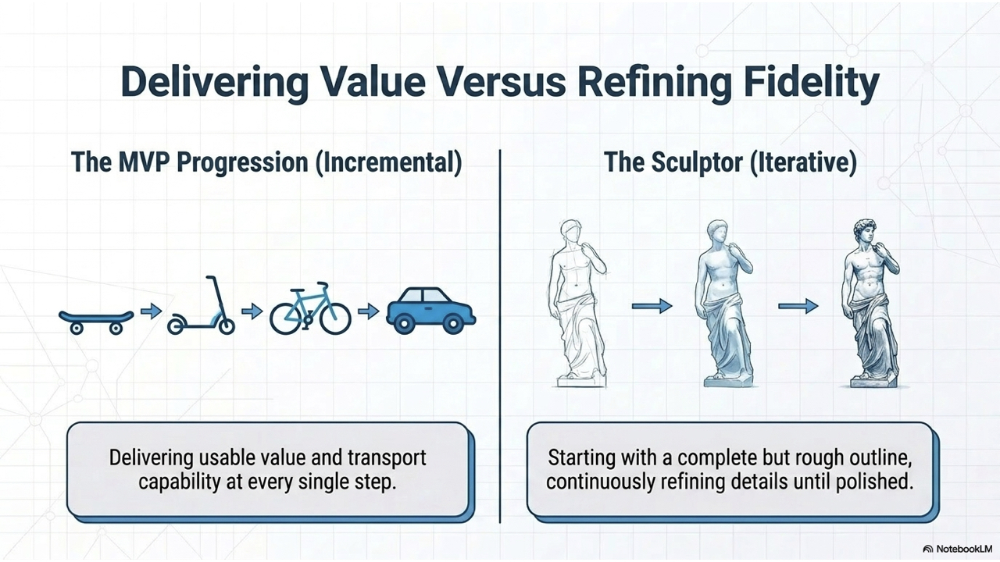
💡💬 Discussion Activity: Choose one of the following systems and propose both an Incremental plan and an Iterative plan showing how releases would evolve:
- University Department Portal
- E-Commerce Marketplace
- Online Food Delivery Platform
- Travel & Vacation Planning System
- Major League Baseball Analytics Dashboard
Case Study: University Department Web Portal
- Introduce department vision and academic programs.
- Synchronize with university faculty databases for live profiles.
- Events Management: Course workshops, academic speeches, spotlight stories.
- Alumni networking and career hub.
- 💡💬 How would you structure development sprints across Waterfall, Incremental, and Agile processes for this project?
Integration and Configuration Model (COTS)
- Based on software reuse, where systems are assembled and customized from existing pre-built components or commercial-off-the-shelf (COTS) applications.
- Reusable elements are configured to adapt their workflows, schemas, and user interfaces to specific organizational requirements.
Categories of Reusable Software:
- COTS Application Systems: Off-the-shelf platforms configured for a specific domain (e.g., SAP ERP, Salesforce CRM, WordPress CMS).
- Component Framework Packages: Collections of reusable libraries integrated into a runtime framework (e.g., Spring Boot, .NET, Node.js packages).
- Cloud Web Services & APIs: Standardized services deployed in the cloud and invoked remotely via REST/GraphQL APIs (e.g., Stripe for payments, Firebase for auth, Twilio for messaging).
💡💬 Discussion: Which modern software frameworks and cloud services do you rely on to rapidly assemble full-stack web applications?
2. Core Process Activities
Requirements Engineering Process
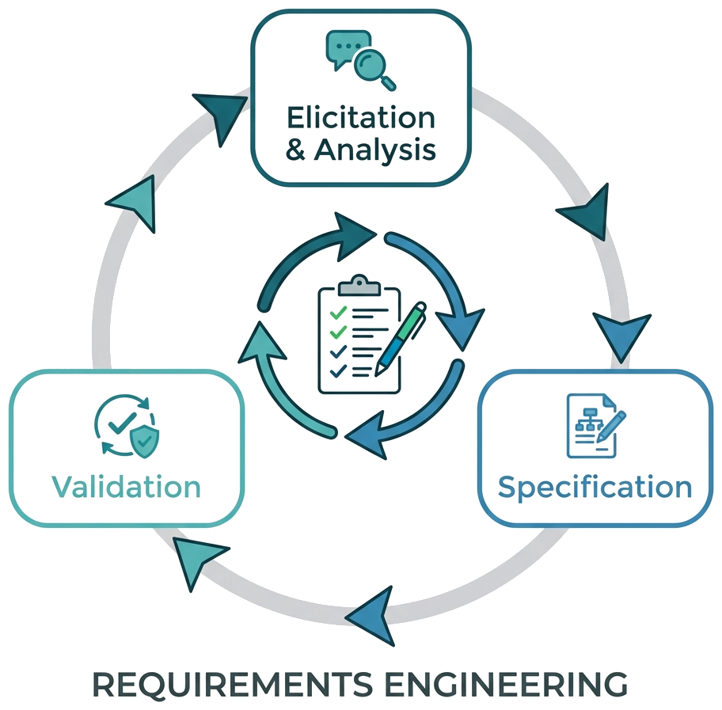
✅ Requirements Engineering is the disciplined process of establishing what services stakeholders expect from a system and the constraints under which it must operate.
The process comprises three main sub-activities:
- Requirements Elicitation & Analysis: Discovering stakeholder needs, business constraints, and system boundaries through interviews, observation, and user stories.
- Requirements Specification: Translating informal customer requirements into a precise, structured specification document.
- Requirements Validation: Checking that the documented specifications are realistic, consistent, complete, and accurately reflect user needs.
💡💬 Discussion: For a campus food ordering system, identify 2 high-level user requirements and specify their detailed technical system specifications.
Design and Implementation
✅ The process of transforming a system specification into an executable, deployable software system.
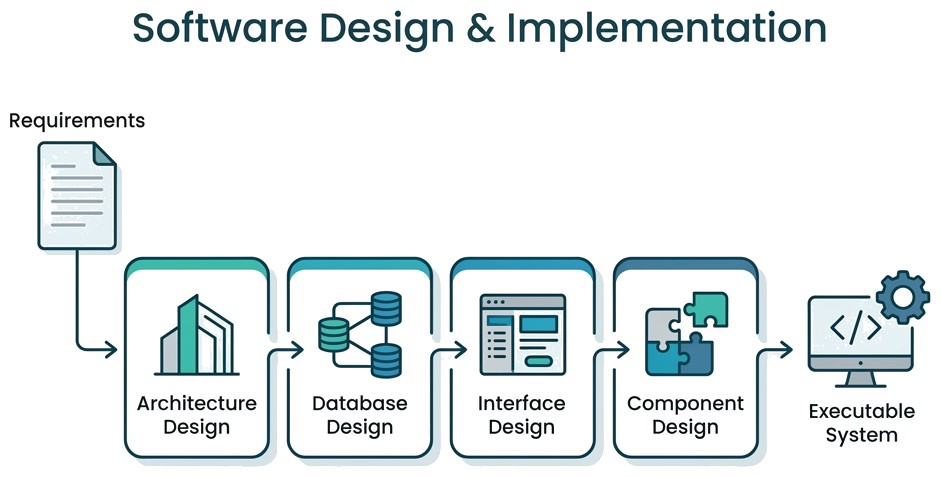
- Software Design: Creating a software architecture, data model, and component interfaces that realize the specification.
- Implementation: Translating the design structures into executable source code programs.
- In modern development, design and implementation activities are tightly coupled and iteratively interleaved.
Four Key Design Stages:
- Architectural Design: Identifying the high-level system structure, major sub-systems, their relationships, and deployment topology.
- Database Design: Designing relational schemas, document stores, and data structures.
- Interface Design: Defining clear contracts (APIs, method signatures, REST endpoints) between components.
- Component Selection & Design: Selecting reusable libraries or designing custom component internals.
Verification and Validation (V&V)
✅ Verification and Validation (V&V) demonstrates that a system conforms to its specification ("building the product right") and meets the true operational needs of the customer ("building the right product").
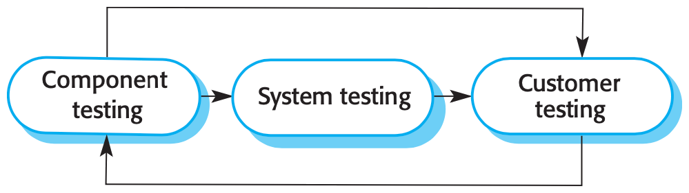
Testing Stages in the Software Process:
- Component / Unit Testing: Individual functions, classes, or modules are tested independently by developers to verify internal logic.
- System / Integration Testing: Testing integrated subsystems as a whole to uncover interface mismatches and evaluate emergent properties (performance, reliability, security).
- Customer / Acceptance Testing: Testing the system with real-world customer data and operational scenarios to ensure it satisfies business requirements prior to sign-off.
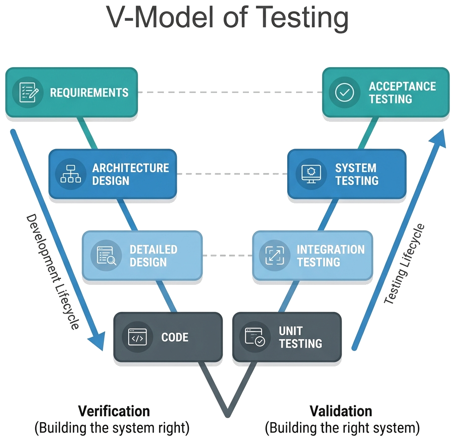
👉 The V-Model: Pairs each development phase (Requirements, Architecture, Detailed Design) directly with its corresponding testing phase (Acceptance Testing, System Testing, Unit Testing).
Software Evolution
- Software is inherently malleable and must continuously change throughout its operational lifetime.
- As business needs evolve, regulations change, and new platforms emerge, software must be updated and maintained.
- The traditional boundary between initial development and long-term maintenance is disappearing—modern systems undergo continuous delivery and perpetual evolution.
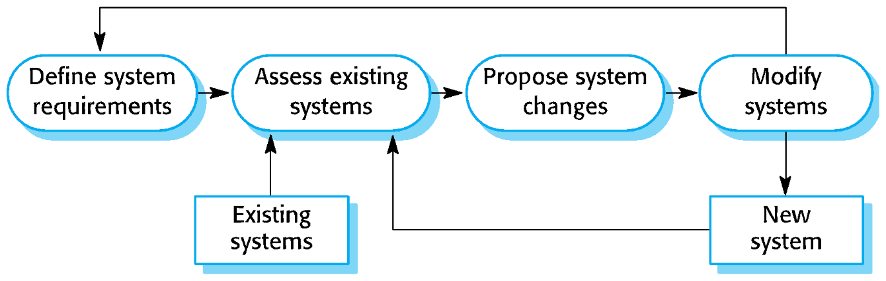
3. Coping with Change
Change is inevitable in all software projects due to business shifts, emerging technologies, changing platforms, and evolving user preferences.
Because changes cause rework (e.g., re-analyzing requirements, re-architecting, re-testing), engineering processes must be designed to minimize change costs:
- Change Anticipation: Activities designed to foresee potential changes before extensive rework occurs (e.g., building rapid prototypes to validate risky assumptions early).
- Change Tolerance: Structuring the architecture and development workflow so changes can be accommodated at low cost (e.g., loose coupling, incremental delivery).
System Prototyping
A prototype is an initial, executable version of a system used to demonstrate concepts, evaluate UI designs, and explore technical feasibility.
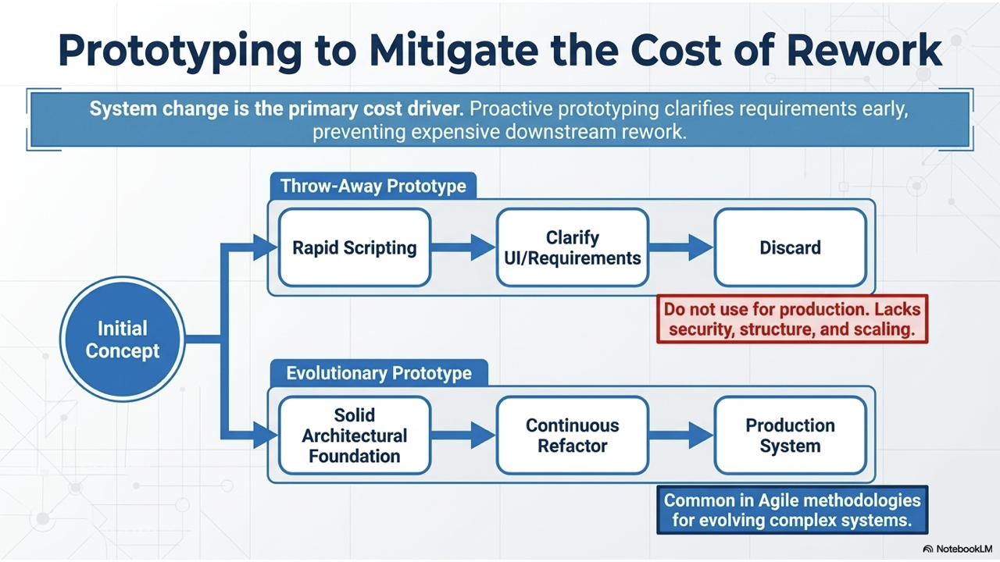
Primary Uses of Prototypes:
- Requirements Engineering: Helps stakeholders clarify ambiguous needs and validate requirements.
- Design Exploration: Allows developers to experiment with architectural patterns, UI layouts, and technology stacks.
- Feasibility Testing: Validates performance bottlenecks and third-party API capabilities.
Benefits of Prototyping:
- Significantly improved system usability and user satisfaction.
- Closer alignment with true customer workflows.
- Lower risk of major architectural surprises late in development.
⚠️ Throw-away Prototypes: Prototypes should typically be discarded rather than used as production code because they are often poorly structured, lack error handling, omit non-functional requirements (security, scaling), and lack documentation.
Incremental Delivery
In an incremental delivery strategy, finished increments of the software are deployed into the hands of real end-users for production use.
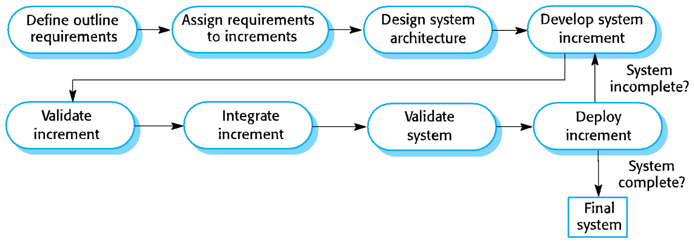
Advantages of Incremental Delivery:
- Immediate Customer Value: Users gain real utility from early increments while subsequent features are being developed.
- Realistic Validation: Real-world usage generates genuine feedback that cannot be replicated in artificial testing labs.
- Lower Total Project Risk: If a project must be paused or canceled early, the organization still retains working, valuable software in production.
4. Process Improvement & CMMI
Process improvement helps software organizations elevate their development capability, reduce defects, lower costs, and achieve predictable delivery schedules.
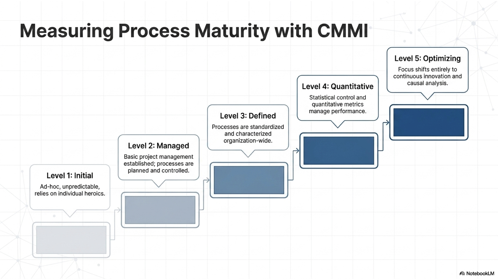
The CMMI Framework
The Capability Maturity Model Integration (CMMI) is a globally recognized process improvement framework that defines 5 Maturity Levels assessing an organization's process capability:
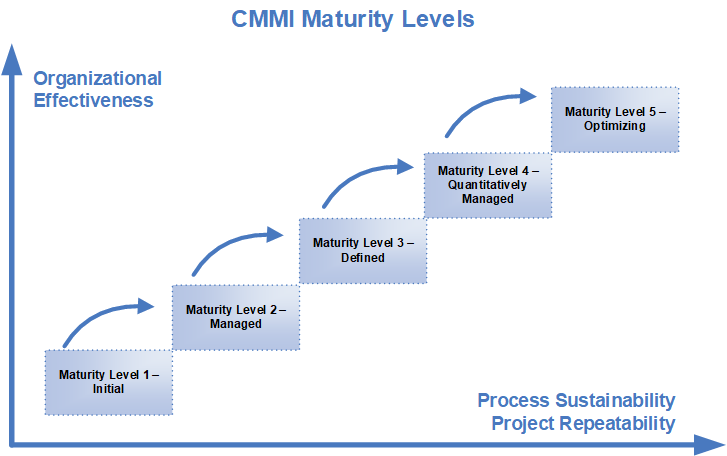
- Level 1: Initial (Ad-hoc / Chaotic)
- Processes are unpredictable, reactive, and poorly controlled. Success relies on individual heroics rather than institutional practices.
- Level 2: Managed
- Basic project management processes are established to control cost, schedule, and scope. Processes are planned and tracked at the project level.
- Level 3: Defined
- Processes are standard across the entire organization. Standard procedures, training, and methodologies are documented and tailored across projects.
- Level 4: Quantitatively Managed
- The organization uses statistical and quantitative techniques to measure process performance and product quality with high predictability.
- Level 5: Optimizing
- The organization continuously improves its processes based on quantitative feedback, root-cause defect analysis, and technological innovation.
CMMI Process Areas by Maturity Level
| Maturity Level |
Key Process Areas (PAs) |
| Level 1 - Initial |
No formal process areas (Ad-hoc execution). |
| Level 2 - Managed |
• Requirements Management (REQM)
• Project Planning (PP)
• Project Monitoring & Control (PMC)
• Supplier Agreement Management (SAM)
• Measurement & Analysis (MA)
• Process & Product Quality Assurance (PPQA)
• Configuration Management (CM) |
| Level 3 - Defined |
• Requirements Development (RD)
• Technical Solution (TS)
• Product Integration (PI)
• Verification (VER)
• Validation (VAL)
• Organizational Process Focus (OPF)
• Organizational Process Definition (OPD)
• Organizational Training (OT)
• Integrated Project Management (IPM)
• Risk Management (RSKM)
• Decision Analysis & Resolution (DAR) |
| Level 4 - Quantitatively Managed |
• Organizational Process Performance (OPP)
• Quantitative Project Management (QPM) |
| Level 5 - Optimizing |
• Organizational Innovation & Deployment (OID)
• Causal Analysis & Resolution (CAR) |
5. Software Engineering Metrics
Metrics provide objective, data-driven indicators to monitor product quality, developer productivity, process health, and user satisfaction.
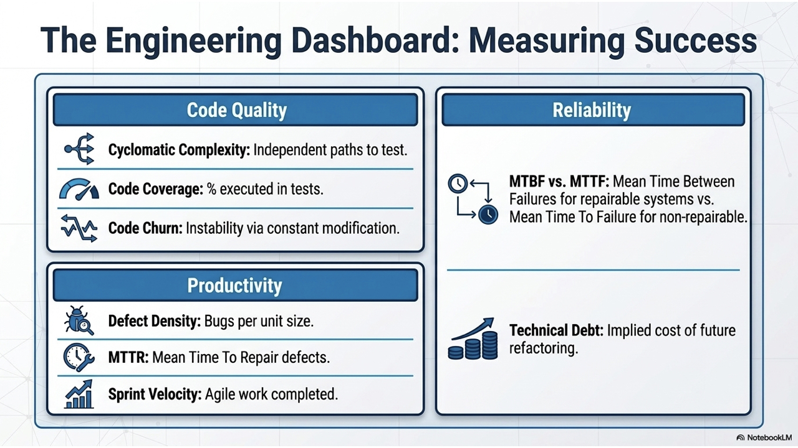
1. Code Quality Metrics
- Cyclomatic Complexity: Measures the number of linearly independent execution paths through code. Higher complexity correlates with higher defect rates and harder maintenance.
- Code Coverage: The percentage of codebase statements or branches executed during automated test runs.
- Code Churn: The volume of lines added, modified, or deleted over time; excessive churn indicates architectural instability.
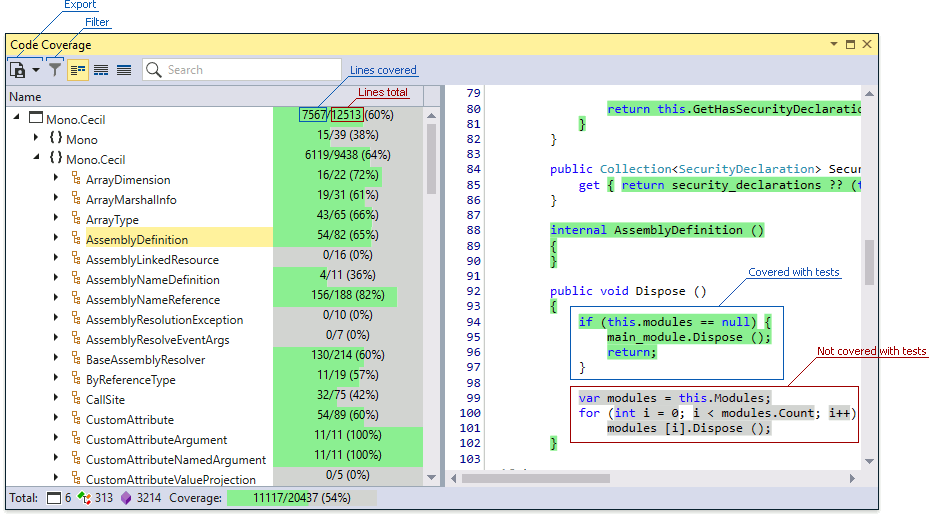
2. Productivity Metrics
- Lines of Code (LOC): Traditional volume metric; should be evaluated carefully as higher LOC does not necessarily equal higher value.
- Sprint Velocity: The number of story points or user stories delivered by an Agile team per sprint iteration.
- Commit Frequency: The cadence of source code check-ins, indicating active continuous integration.
3. Defect Metrics
- Defect Density: Number of confirmed defects per thousand lines of code (KLOC) or per function point.
- Defect Leakage: Percentage of defects that escape early testing stages into production.
- Mean Time to Detect (MTTD): Average time elapsed between bug introduction and identification.
- Mean Time to Repair (MTTR): Average time required to debug, fix, and verify a reported defect.
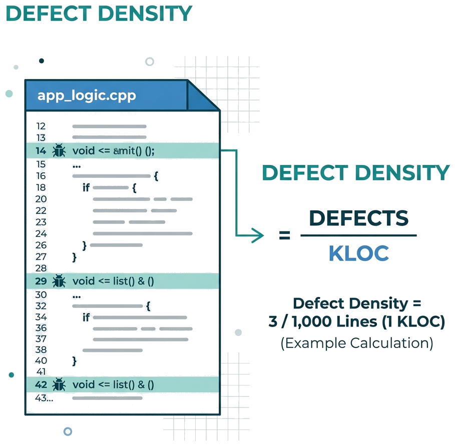
4. Performance & Reliability Metrics
- Response Time & Latency: System round-trip duration when responding to client requests.
- Throughput: Transactions or requests handled per unit time.
- MTBF / MTTF: Mean Time Between Failures and Mean Time to Failure, measuring system reliability.
- Technical Debt Ratio: Estimated remediation cost of code shortcuts relative to total system replacement cost.
5. Process & Agile Metrics
- Cycle Time & Lead Time: Total duration from task inception/commitment to production deployment.
- Sprint Burndown Chart: Visual representation of remaining sprint work over time, highlighting team trajectory and blockers.
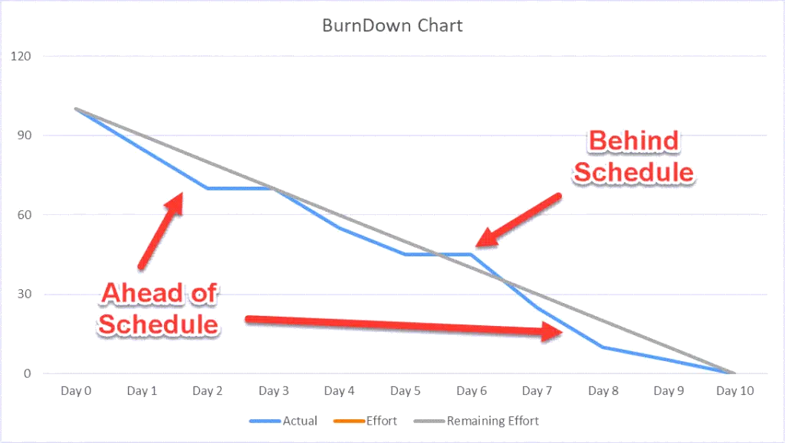
6. Security & UX Metrics
- Vulnerability Count & Time to Patch (TTP): Tracking unresolved CVEs and remediation speed.
- Net Promoter Score (NPS): Standard index measuring customer willingness to recommend the software.
- Task Completion Rate & Error Rate: UX indicators tracking whether users achieve their goals intuitively without application faults.
Summary & Key Takeaways
- Universal Activities: All software processes require specification, design & implementation, validation, and evolution.
- Process Selection:
- Use Waterfall when requirements are fixed, stable, and safety/hardware constraints demand strict upfront sign-offs.
- Use Iterative & Incremental (Agile) for dynamic business applications where early value delivery and adaptability are vital.
- Coping with Change: Minimize rework costs through rapid prototyping, change tolerance design, and incremental delivery.
- Maturity & Metrics: Adopt CMMI principles and objective software metrics to foster continuous, data-driven engineering improvement.